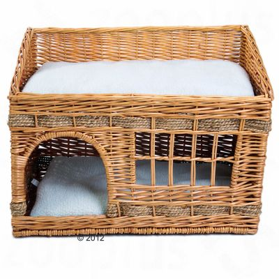

Pueblo macskaházikó

Igényesen fonott macskaházikó pueblo indián stílusban.
Ideális macskáknak és kis testű kutyáknak.
Kétszintes, kézzel készített házikó.
2 fekvőhely puha párnával. Méret: H 56 x Sz 36 x M 42 cm.